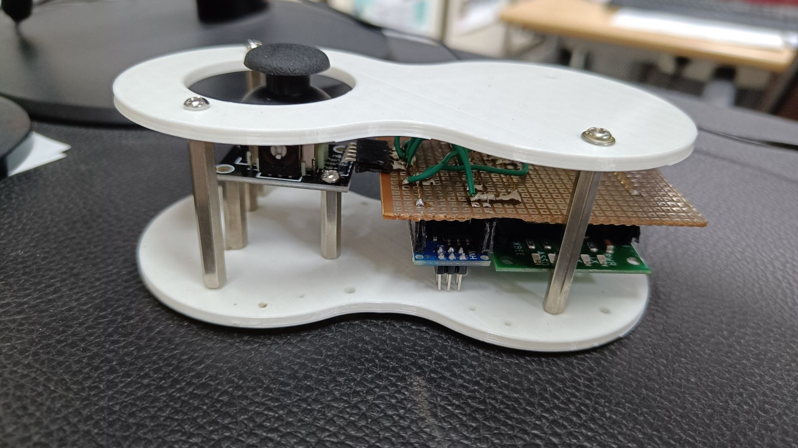
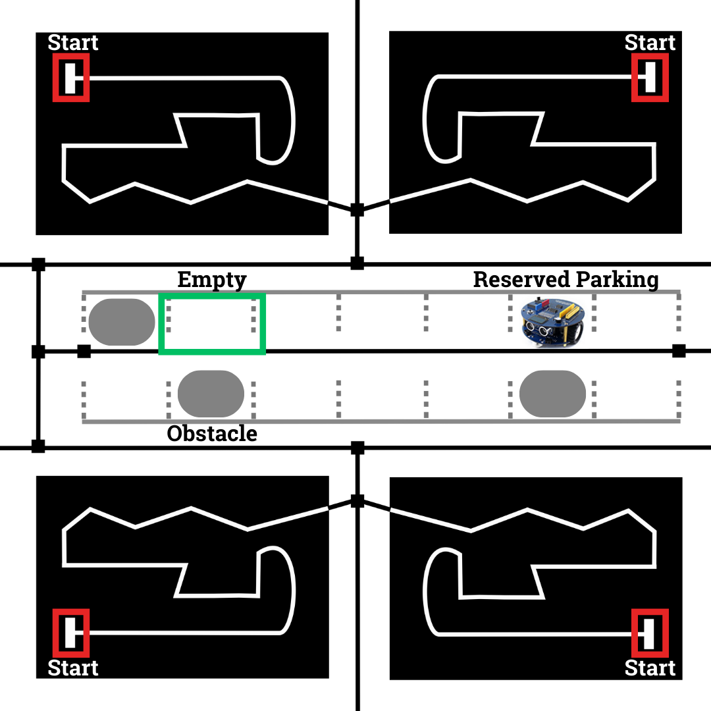

CS684: Embedded System Course
Lab 5: Final Project Implementation
Aim
This lab builds upon your Lab 4, enhancing the robot's capabilities with a hybrid control system: autonomous and manual. Problem Statement of Lab 4 remains same, The robot should park itself from any of the start point to an empty parking location using Line Following and Obstacle Avoidance algorithm.
However, you'll now introduce a joystick-based remote control for manual control along with Autonomous Navigation.
Testing:
In Lab 5 first we will design the Joystick based remote and do the initial Testing:
- Joystick-Based Remote Design:
All the components for designing the Remote is already provided to you. You will be designing the remote controller. (You have to do the soldering and mounting. During lab slot, we will provide access to the soldering station.)

- Remote-Robot Communication:
For remote, one Joystick and two Limit switches are provided. These will be interfaced with the Arduino nano. Based on the values received from the joystick write a code to control the robot. (Note: For communication use Zigbee) Note: For zigbee configuration you will require XCTU: XCTU Install
Also configure the zigbee to communicate with each other.
Following is the control of the robot:
| Input | Robot Action |
|---|---|
| Joystic Middle Button | Stop |
| Joystick Left | Left |
| Joystick Right | Right |
| Joystick Front | Forward |
| Joystick Back | Backward |
| Limit Switch 1 | Buzzer On |
| Limit Switch 2 | buzzer Off |
Integrating Remote Control with Lab 4 implementation:
Following arena will be used for the finals.

- The robot can be started from any Start position. Once you start the robot, wait for the input from the remote. Two limit switches can be used to indicate the position of the robot, wether it started from the right or left.
- Once robot receives input from the remote, it should start following the line.
- If the robot deviates from the line, team members can use the remote to guide it back on track. (You can implement additional communication functionalities as needed.)
- Once the robot enters in the parking area, it should search for the empty parking slot and park itself.
Important Notes:
- Remote control serves as a backup due to potential robot inconsistencies.
- Excessive reliance on remote control will result in point deductions. A perfectly autonomous run earns the highest marks.
- The final competition will involve four robots navigating the arena simultaneously. Consider dynamic obstacle avoidance (other robots) while enhancing your line following implementation.
- If robots collide, we will instruct one to stop using the remote control.
- Final project demo will be in person, so make sure that you test the robot in different lighting conditions.
Video Instructions:
- Keep the robot at the start loaction. Turn on the robot. Initially robot should follow the white line.
- Keep obstacle (alphabot box can be used) in 4 random parking locations.
- Show that the robot has avoided the obstacles and parked itself in an empty parking location..
Follow the same instructions as outlined in Lab 4. If you've made improvements to the robot's speed or overall implementation, feel free to reshoot the video for submission and submit it.
Finals of the project will be done on 16th April. During 16th we will have run in person. This video will just be a backup. Evaluation will be done based on the final run.
Submission Instructions
- For Lab-5 submission you have to upload a
.tar.gzfile.Heptagon Projectfolder: It should contain followingHeptagonFolder: Containing the heptagon implementation of the logic.Integrate.shfile: to generate the c files from heptagon.SupervisorFolder: it containssupervisor.inofile and auto generated c files from the heptagon.
Readme.txtfile:- Youtube link of the video - shoot the working of the robot moving from Point A to Point B.
Contribution.txtfile: stating detailed contribution of each member
- Compress the folder and rename it as
<GroupName>_Lab_5.tar.gz(check your file, it shouldn't be empty) - Upload the file on Moodle
- There should be only one submission per group. Member having highest roll no should do the submission.